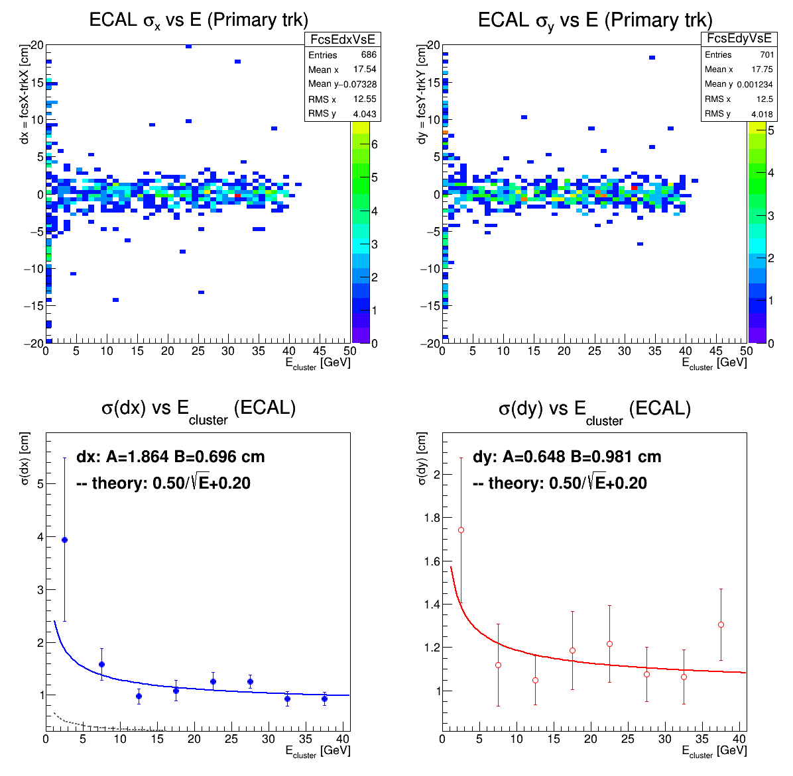
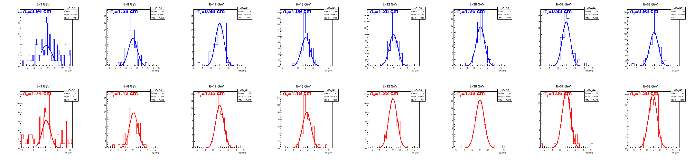
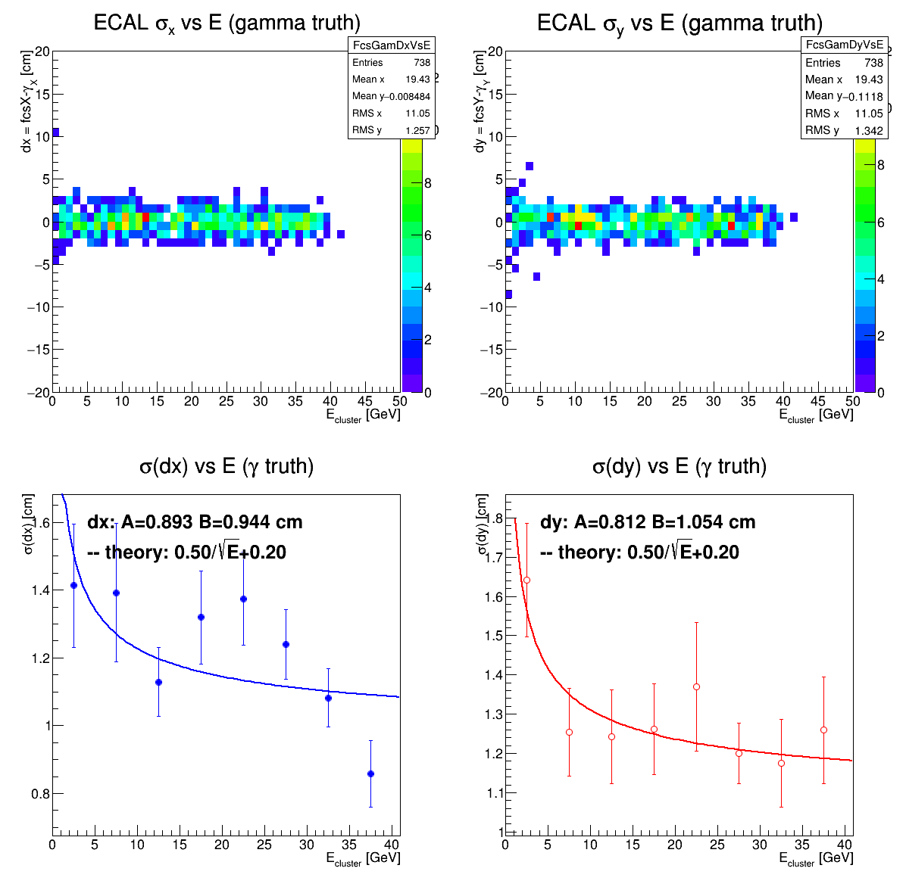
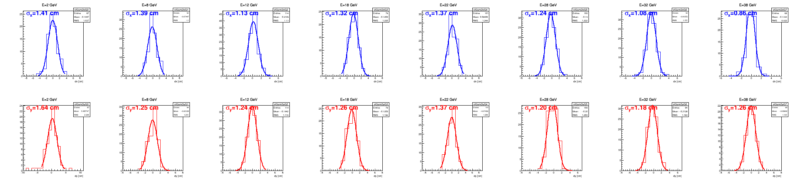
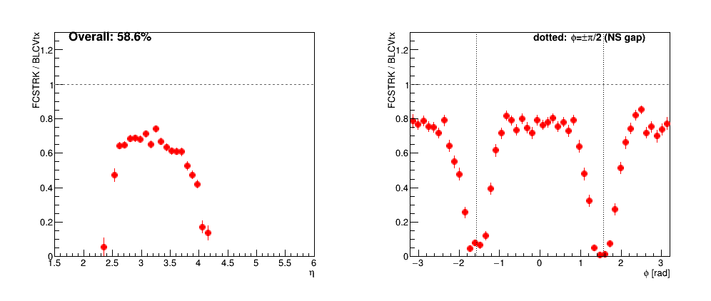
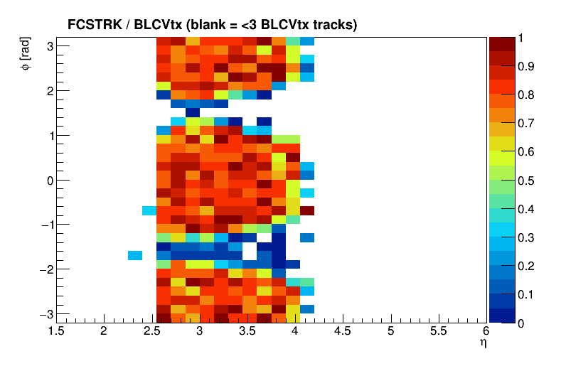
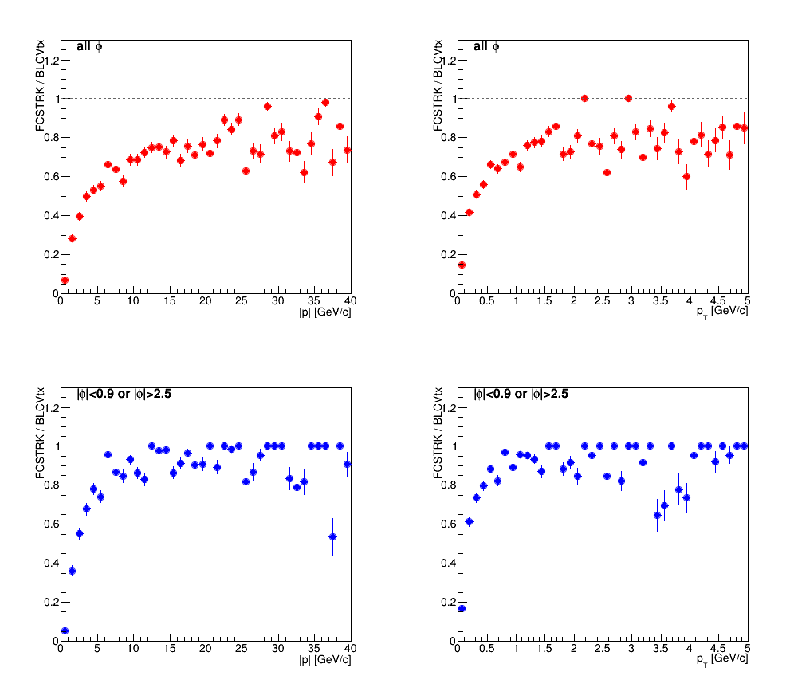
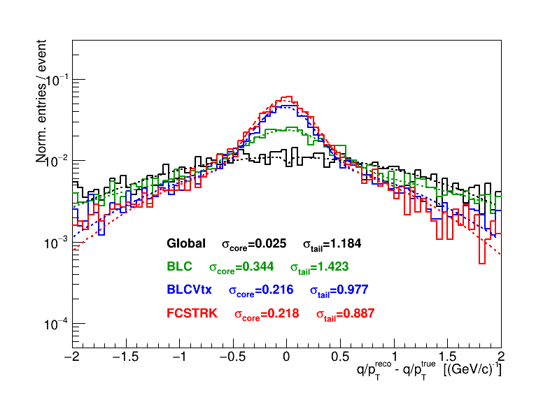
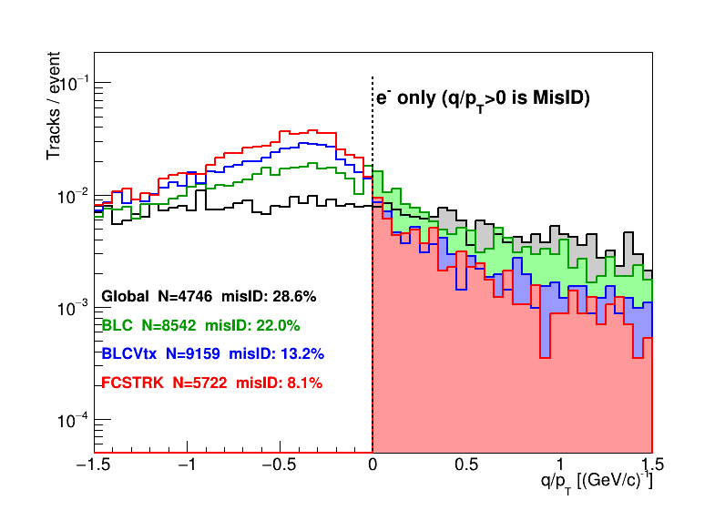
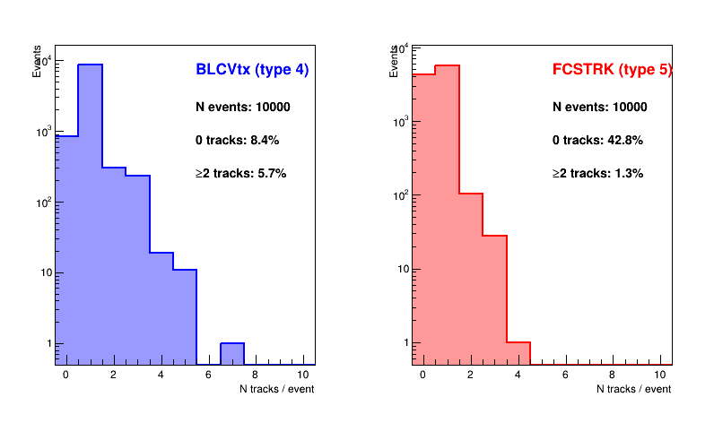

| E [GeV] | N | σ(dx) [cm] | σ(dy) [cm] | σpos theory |
| 5–10 | 72 | 1.58 | 1.12 | 0.36 cm |
| 10–15 | 74 | 0.98 | 1.05 | 0.35 cm |
| 15–20 | 66 | 1.09 | 1.19 | 0.32 cm |
| 20–25 | 74 | 1.26 | 1.22 | 0.31 cm |
| 25–30 | 81 | 1.26 | 1.08 | 0.29 cm |
| 30–35 | 74 | 0.93 | 1.06 | 0.29 cm |
| 35–40 | 68 | 0.93 | 1.30 | 0.28 cm |
 |
 |
| σ(dx), σ(dy) vs E | dx, dy distributions per energy bin (blue/red=fitted; orange=outside fit range) |
| E [GeV] | N | σ(dx) [cm] | σ(dy) [cm] | theory [cm] |
| 0–5 | 87 | 1.41 | 1.64 | 0.42 |
| 5–10 | 94 | 1.39 | 1.25 | 0.36 |
| 10–15 | 114 | 1.13 | 1.24 | 0.35 |
| 15–20 | 79 | 1.32 | 1.26 | 0.32 |
| 20–25 | 101 | 1.37 | 1.37 | 0.31 |
| 25–30 | 100 | 1.24 | 1.20 | 0.29 |
| 30–35 | 94 | 1.08 | 1.18 | 0.29 |
| 35–40 | 68 | 0.86 | 1.26 | 0.28 |
 |
 |
| σ(dx), σ(dy) vs E (γ gun) | dx, dy distributions per energy bin (blue/red=good fit; red/orange=at σ limit) |
| Loss category | Tracks | Fraction of BLCVtx | Recoverable? |
| True loopers (fail at z=725 and z=500 cm) | 1144 | 13.8% | No — physics limit |
| No matching cluster at z=725 cm | 1022 | 12.3% | Partially (NS gap, η≈4 hole, low-E threshold) |
| Refit failed after cluster match | 248 | 3.0% | Minor |
| Fallback via z=500 cm + straight line | 3 | ≈0% | Negligible |
| Track type | Entries | σcore [(GeV/c)−1] | σtail [(GeV/c)−1] |
| Global (trkType=0) | 4751 | 0.025 | 1.220 |
| BLC (trkType=1) | 8526 | 0.342 | 1.427 |
| BLCVtx (trkType=4) | 9158 | 0.216 | 0.977 |
| FCSTRK (trkType=5) | 5746 | 0.219 | 0.888 |
| Track type | Wrong-sign count | Total tracks | Charge misID rate |
| Global (trkType=0) | 1354 | 4751 | 28.5% |
| BLC (trkType=1) | 1853 | 8526 | 21.7% |
| BLCVtx (trkType=4) | 1189 | 9158 | 13.0% |
| FCSTRK (trkType=5) | 462 | 5746 | 8.0% |
| Track type | Events with 0 tracks | Events with ≥2 tracks |
| BLCVtx (trkType=4) | 8.4% | 5.7% |
| FCSTRK (trkType=5) | 42.5% | 1.4% |
 |
 |
| Conditional efficiency (FCSTRK/BLCVtx) vs η and φ | 2D conditional efficiency vs (η,φ) |
 |
|
| Conditional efficiency vs |p| and pT: top = all φ, bottom = |φ|<0.9 or |φ|>2.5 (away from NS gap) | |
 |
 |
| q/pT residual: double-Gaussian fit, per-event highest |pT| | q/pT distribution: charge misID |
 |
|
| N tracks per event: BLCVtx (left) vs FCSTRK (right); FCSTRK 42.8% zero-track events |
{kind=link}
{kind=link}
{kind=link}
{kind=link}
{kind=link}
{kind=link}
{kind=link}
{kind=link}
{kind=link}
{kind=link}